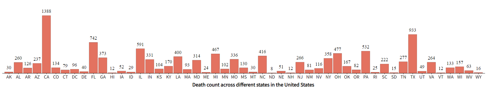

Black Hat Vis
At first, a choropleth map was created to visualize the distribution of US gun death violations accross all states. This visulization resembles black hat vis as the distribution is not correctly represented by choosing only three classes for it (0-10, 10-50, More than 50). The title above the map also enforces this falsified information. Also, there should have been a legend title.

To visualize distribution of city scale, a bubble chart was overlayed on the map based on the lat-lng of each city. The reason this visulization resembles black hat is because the circle sizes are misrepresentative of the death counts. There should have been appropriate normalization for it.
To further see the distribution of death counts at city/state scale, a pie chart and a horizontal bar chart is generated when the user hovers over the map. Problem with the pie chart is that, there is no legend describing which part resembles what gender (male/female). Also, the exact number should also be embedded with the chart. The same problem lies with the bar chart for age distribution.
White Hat Vis

To fix the issues, in black hat visualizations, more classes were used in the choropleth map that aptly represents the distribution of death accross different states. A legend title was added below the legend. Also the misrepresentative title was replaced with information on how to interact with the map. The bubble chart was fixed by using proper radius for the circles.
Proper colors, legends and axes titles were added with the pie chart and horizontal bar chart to aptly represent the distributions based on age and gender. Also, a title was provided above the two charts displaying which state or city's information is represented in the charts and also the total death count.
Additionally, a bar chart was generated at the very bottom to show the death counts accross all the states in one place.
Credits
The visualizations were built using several Open Source components (Pandas, Javascript, HTML, CSS, SVG ,d3.js).
Visualization inspirations from:
Bill Morris (Choropleth Map),
d3-graph-gallery,
Michelle Chandra (Basic US State Map),
Academind
Also, thanks to: Stack Overflow